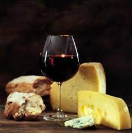

<!DOCTYPE html>
<html lang="es">
<head>
    <meta charset="UTF-8">
    <meta http-equiv="X-UA-Compatible" content="IE=edge">
    <meta name="viewport" content="width=device-width, initial-scale=1.0">
    <title>Delicattessen</title>
    

    

                <!-- Fonts -->
    <link href="https://fonts.googleapis.com/css2?family=Gentium+Plus&family=Indie+Flower&family=Oregano:ital@1&display=swap" rel="stylesheet">
    <link href="https://fonts.googleapis.com/css2?family=Emilys+Candy&family=Gentium+Plus&family=Indie+Flower&family=Oregano:ital@1&display=swap" rel="stylesheet">
                <!-- Link css -->
    <link rel="stylesheet" href="../estilos/estilos.css">

</head>
</html>

                

<body>
                            <!-- Titulo y subtitulo -->
<header>
   
    <h1 class="titulo">Elexir</h1>
        
    <h2 class="subtitulo">Wines & Deli</h2>
    
                        <!-- Menu -->
    
    <nav class="menu">
    <ul>
        <li><a href="../index.html"a>Home</a></li>
            <li><a href="vinos.html"a>Vinos</a></li>
            <li><a href="espumantes.html"a>Espumantes</a></li>
            <li><a href="delicattessen.html">Delicattessen</a></li>
            <li><a href="contacto.html"a>Contacto</a></li> 
    </ul>
</header>

    <hr>
    <h1 class="parrafoimp">Maridajes</h1>
<div><section></div></section>


<h2 class="parrafoimp">Se ha escrito mucho sobre cuáles son las combinaciones más adecuadas de vinos y alimentos. Actualmente, las normas no son demasiado estrictas, pero es conveniente tener en cuenta una serie de aspectos que nos ayuden a disfrutar más de esta combinación.</h2>
        <ul class="parrafoimp">
           <div>
            <li>Para realizar un maridaje adecuado es fundamental prestar atención a la intensidad de la comida, ya que debe ser acorde a la intensidad del vino.</li>
            <li>Podés identificar sabores y sensaciones similares entre tu vino Malbec y las comidas para reforzarlos y amalgamarlos entre sí, realizando un maridaje por afinidad.</li>
            <li>La opción de los polos opuestos nunca falla. Para llevar a cabo un maridaje por contraste es clave encontrar el encanto entre lo dulce y lo salado, o lo cremoso y lo ligero.</li>
            <li>Para combinar productos locales, se utiliza el maridaje regional, armonizando los alimentos de un mismo territorio, como un vino Malbec con unas empanadas mendocinas.</li>
            </div>
    </ul>
    </nav>
    
            <!-- Pie de pagina -->

    <footer>
        <h2>Seguinos en</h2>
        <h3>Facebook</h3>
        <h3>Instagram</h3>
        <h3>Twitter</h3>
    <br>
        <h4>Copyright © 2018 - Diseño Web realizado por Della Maggiore Iván</h4>
    </footer>
</body>
<br>

